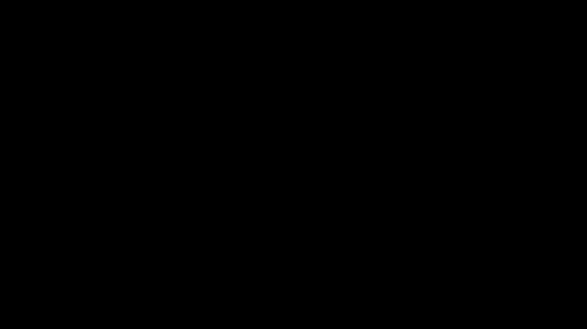
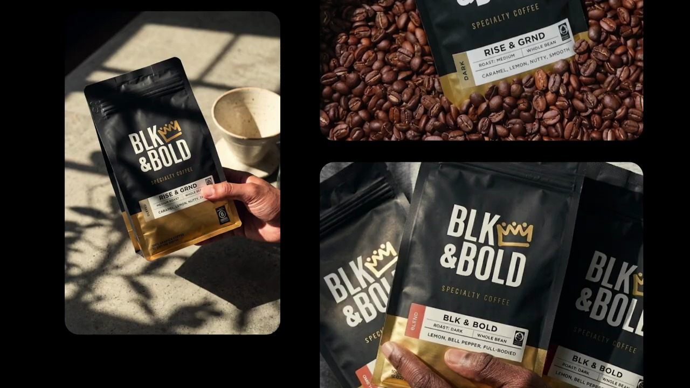
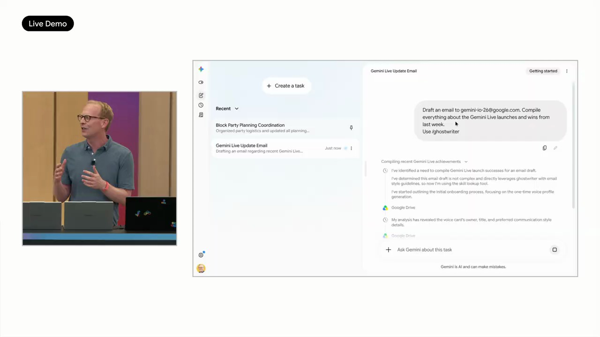
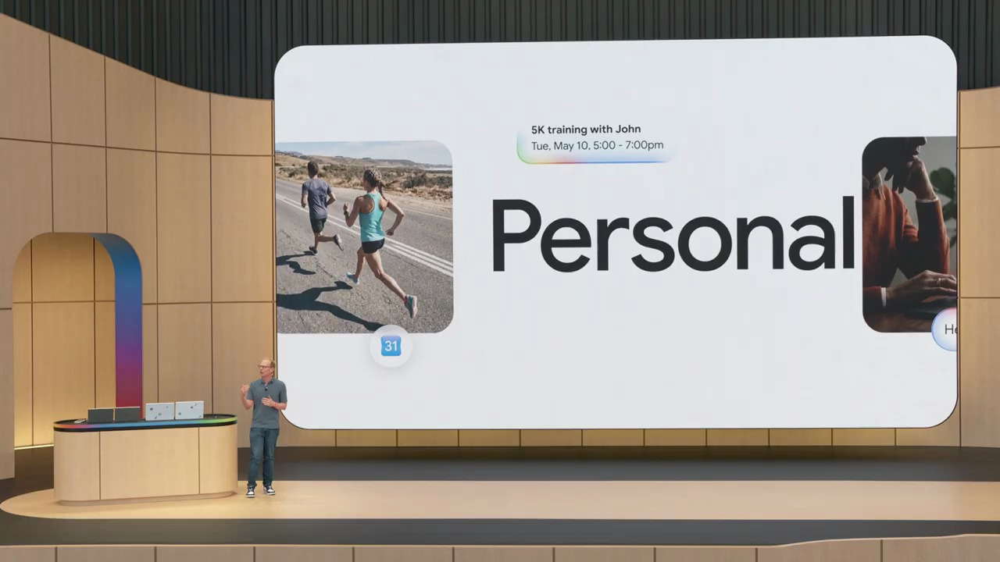
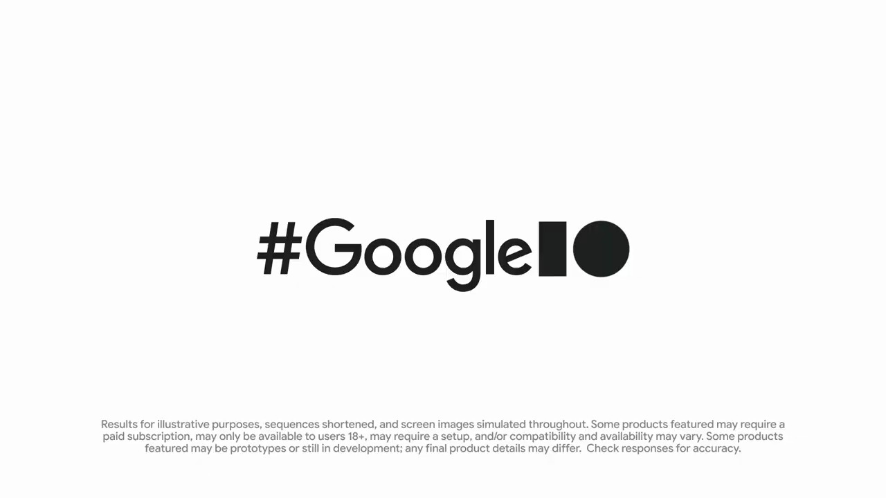

Key Moments






Summary & Script
Google I/O '26 Keynote
Source: https://www.youtube.com/watch?v=wYSncx9zLIU
Video ID: wYSncx9zLIU
Overview
Google’s I/O 2026 keynote, led by CEO Sundar Pichai and DeepMind lead Demis Hassabis, showcased the company’s AI‑first strategy and the rapid expansion of its Gemini models across products. Highlights included staggering growth in AI usage, new generative‑AI features in Search, Maps, YouTube, Docs, and the announcement of Gemini Omni, a multimodal world‑model capable of creating realistic videos and simulations. The talk also detailed massive investments in custom TPU hardware and infrastructure that power these advances.
New Features & Announcements
Gemini Omni – A next‑generation multimodal model that can generate and edit images, video, and interactive simulations from any input, pushing toward world‑model AI.
Timeline: announced at I/O 2026
Availability: Private preview (roll‑out details to be shared later)Docs Live (Voice‑first Docs) – Real‑time voice dictation that creates and formats Docs, with plans to extend the same capability to Gmail and Google Keep.
Timeline: Summer 2026 for Pro & Ultra subscribers
Availability: Public preview for eligible usersAsk YouTube – Conversational search that surfaces the most relevant video segments, provides summaries, and keeps context for follow‑up questions.
Timeline: Summer 2026 rollout in the U.S.
Availability: Public preview (U.S.)Ask Maps – Expanded conversational AI for Google Maps, handling complex, multi‑step queries (e.g., “buy a dress after a pond incident”).
Timeline: Already live (latest upgrade)
Availability: GeneralTPU 8t & 8i (8th‑gen TPUs) – Dual‑chip architecture: 8t for training (≈3× previous generation) and 8i for inference (≈1,500 tokens/sec, 2× performance‑per‑watt).
Timeline: Announced at Cloud Next 2026, shipping later this year
Availability: Cloud customers, internal use
Topics Covered
- AI‑first company transformation – Ten‑year journey to a full‑stack AI approach built on custom silicon, secure foundations, research, and product integration.
- Scale of AI adoption – Monthly token processing grew from 9.7 trillion (2021) to 3.2 quadrillion (2024), 8.5 M developers building apps, 19 billion tokens/minute via APIs.
- Gemini ecosystem growth – Search AI Overviews reached 2.5 B MAU; Gemini app jumped from 400 M to 900 M MAU; 50 B images generated with Nano Banana.
- Product‑level AI integration – Search, Maps, YouTube, Docs, Keep, Gmail now embed conversational AI, turning single queries into ongoing dialogues.
- Infrastructure investments – Capital expenditure rising to ~$180‑190 B; focus on next‑gen TPUs, distributed training with JAX & Pathways, and energy‑efficient compute.
- World‑model research – DeepMind’s progress toward AGI via Gemini Omni, demonstrating physics‑aware generation (kinetic energy, gravity) and multimodal editing.
- Developer ecosystem – Emphasis on APIs, model “Agents”, and tools that let developers build custom AI assistants and experiences.
Key Takeaways
- Google’s AI usage is expanding exponentially, now processing quadrillions of tokens per month.
- Gemini models are the core driver of user growth across Search, Maps, YouTube, and the standalone Gemini app.
- Gemini Omni marks a significant step toward a true world model, enabling realistic video and simulation generation.
- New voice‑first productivity tools (Docs Live, Gmail, Keep) will let users create content entirely by speaking.
- The 8th‑generation TPUs dramatically increase training speed and inference latency while halving power consumption.
- Google is committing roughly $180 B this year to AI infrastructure, underscoring the strategic importance of custom silicon.
- The developer community is crucial: 8.5 M developers are building on Google’s models, processing 19 B tokens per minute.
Notable Quotes
- “We’re taking a differentiated, full‑stack approach to AI innovation… from our custom silicon and secure foundation, to our world‑class research and models.” – Sundar Pichai
- “It’s the stories of how people are using AI that are the best measure of progress.” – Sundar Pichai
- “We are seeing incredible demand across our products… 13 products with over 1 billion users each.” – Sundar Pichai
- “Gemini Omni… can create anything from any input… a step‑change in simulating kinetic energy and gravity.” – Demis Hassabis
- “If you learn anything in 27 years of working on Search, it’s that latency matters.” – Sundar Pichai (on TPU 8i)
Podcast Script
JORDAN: Hey everyone, welcome back to the pod! I'm Jordan, here to dig into the details of Google's latest I/O keynote.
MIKE: And I'm Mike, ready to chat about what all this AI hype means for you and me. Let’s jump in—what’s the biggest headline you caught?
JORDAN: Sundar Pichai announced that the Gemini models are now processing 3.2 quadrillion tokens a month—that's a seven‑fold jump from last year.
MIKE: Wow, that’s massive. But why should we care about tokens? Does it translate to anything we can feel in daily life?
JORDAN: Tokens are basically the building blocks of AI queries. More tokens mean more interactions across Google’s products—Search, Maps, YouTube, you name it.
MIKE: So basically, everyone’s talking to AI more often, from students prepping for exams to musicians using generative tools. That’s a cultural shift.
JORDAN: Exactly. And the rollout isn’t just on the surface. Google’s new TPU 8t and 8i chips are three times more powerful and twice as energy‑efficient, letting them train larger models in weeks instead of months.
MIKE: Faster training means cooler features hitting us sooner. I’m curious—what’s the most exciting new feature they demoed?
JORDAN: “Docs Live.” You can dictate a full document, pull in data from Drive, and have Gemini format it, all by voice. The demo even generated a table of analogies for a career‑day talk.
MIKE: That sounds like a game‑changer for productivity. Imagine a teacher prepping lesson plans on the fly or a startup founder drafting a pitch without typing a word.
JORDAN: And it’s not limited to Docs. The same voice capabilities are coming to Gmail and Keep later this summer, expanding the conversational AI ecosystem.
MIKE: Speaking of ecosystems, they mentioned “Ask YouTube.” How does that differ from just searching YouTube?
JORDAN: Instead of a list of videos, you get a conversational summary, relevant timestamps, and even a comparison table—so you can ask follow‑up questions without leaving the thread.
MIKE: That could cut down endless scrolling. But with all this AI everywhere, any concerns about the scale of compute?
JORDAN: Google’s capex is projected at around $180‑$190 billion this year, six times last year, to fund custom silicon and data centers. The investment underpins the TPU rollout and the massive token processing volume.
MIKE: Massive spending, but if it fuels tools that help solve “solvable disease” and climate simulations, the payoff could be huge. Any hints on what’s next?
JORDAN: Demis Hassabis introduced Gemini Omni—a multimodal model that can generate videos, images, and simulations from any input, moving us closer to true world models and, as they say, AGI.
MIKE: So we’re heading toward AI that not only chats but actually visualizes concepts—like a clay‑mation of protein folding. That’s mind‑blowing for education and research.
JORDAN: Bottom line: faster chips, larger models, and deeper integration into everyday apps. The token numbers show adoption; the hardware investments show commitment.
MIKE: And for listeners, that means more AI‑powered tools at your fingertips, from drafting docs by voice to getting instant video explanations. Exciting times!
JORDAN: Thanks for tuning in. We’ll keep dissecting the tech as it unfolds.
MIKE: Catch you next episode—stay curious and keep asking, “What can AI do for me today?” Bye!